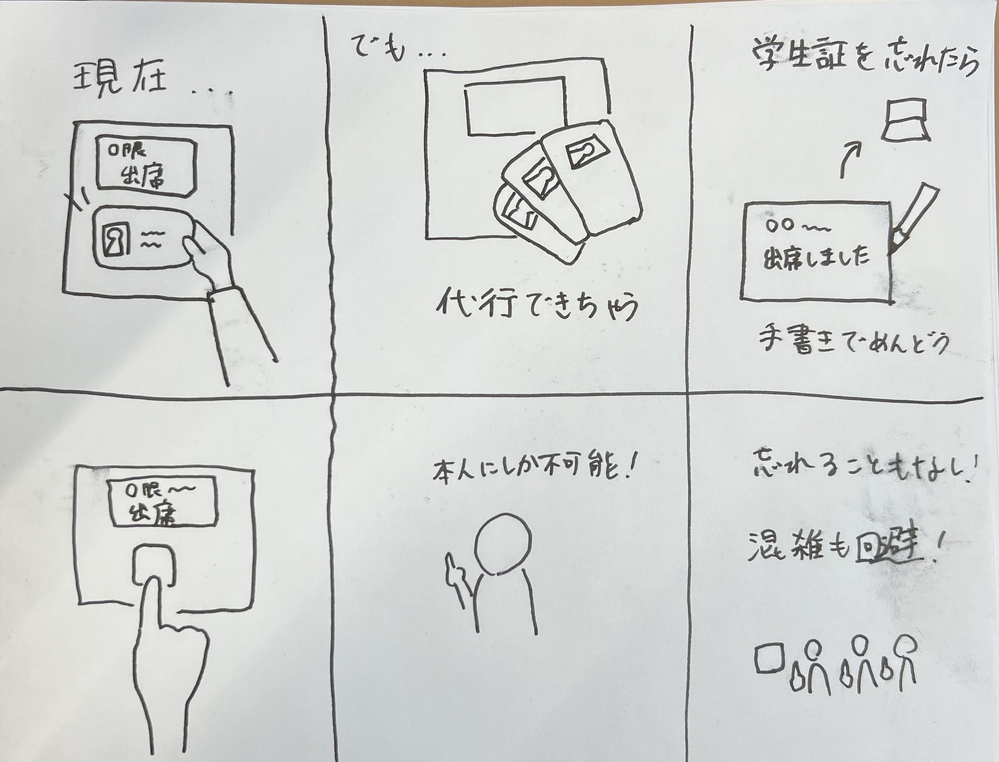

第3回
IoTに関して：遠隔で操作、管理させることで、どのような新しいサービスが考えられるか？
グループワークした内容（ポストイット画像）
自分で考えたアイディア（スケッチ）

現在神奈川大学では、学生証を教室の機械にかざして出欠確認をおこなっているが、
代行によるトラブルが起きたり、学生証を忘れたときにはすべての授業で紙に書いて先生に入力してもらうなどの作業が増えてしまったりしている。
指紋センサーを利用して出欠確認を行えば、このようなことが改善でき、ドア前の混雑も回避できると考えた。
代行できないのは困る、
顔認証にした方がよい、
席に指紋認証の機械をつけて誰がどこにいるかを確認できるようにすると更によい、
などの意見をもらった。